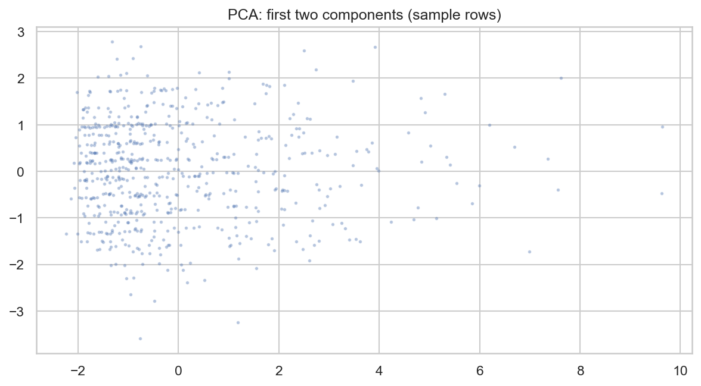
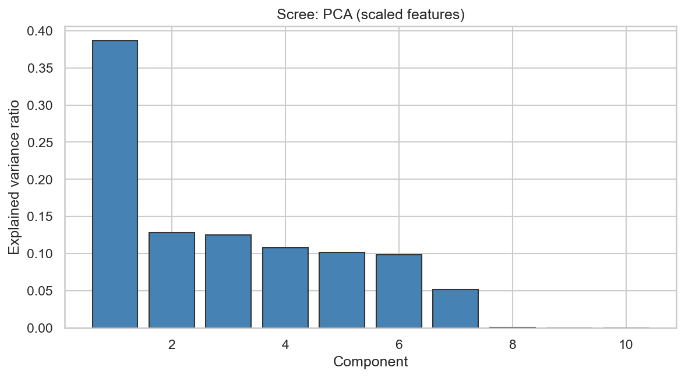
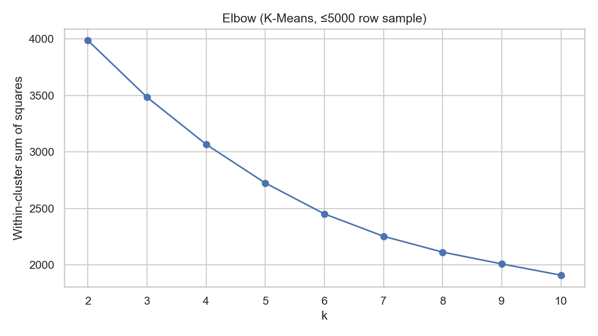
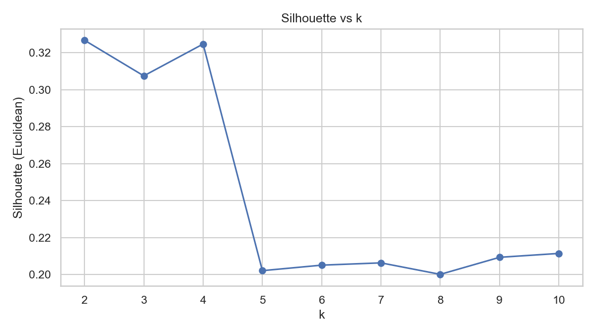
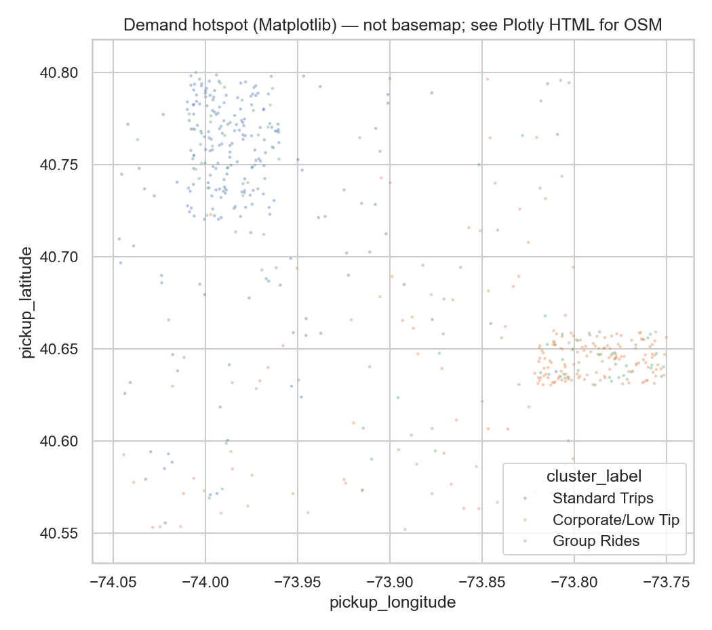
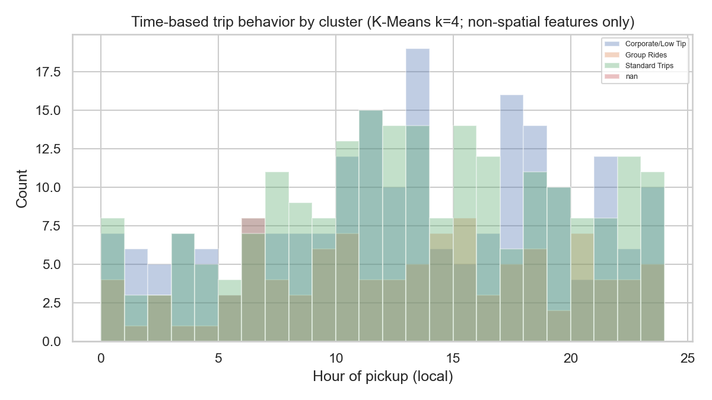
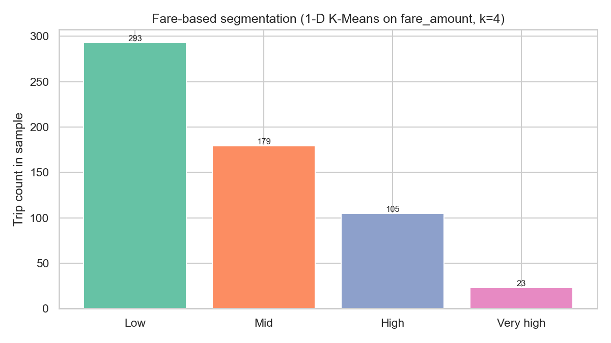

Automated script-generated HTML study report
This is a Python clustering methodology study using NYC TLC-style taxi trip data. If raw TLC data is unavailable, the pipeline falls back to a reproducible demo dataset so the workflow remains fully runnable end-to-end.
Data loading → preprocessing → scaling → PCA → clustering tendency → optimal K → K-Means clustering → validation → insights


The first components capture a meaningful share of variance, and the PCA scatter indicates separable structure consistent with downstream clustering.
Hopkins statistic: 0.8230 (values above ~0.5 suggest non-random cluster tendency).


Selected k = 4 to balance compactness, separation, and interpretability of business-relevant trip segments.
| metric | value | note |
|---|---|---|
| silhouette | 0.3247 | K-Means k=4; sklearn. PAM/K-Medoids not in this build (scikit-learn-extra not required). |
| davies_bouldin | 1.2517 | K-Means k=4; sklearn. PAM/K-Medoids not in this build (scikit-learn-extra not required). |
| calinski_harabasz | 151.0836 | K-Means k=4; sklearn. PAM/K-Medoids not in this build (scikit-learn-extra not required). |
| dunn_index | 0.0471 | K-Means k=4; sklearn. PAM/K-Medoids not in this build (scikit-learn-extra not required). |
| cluster_label | passenger_count | trip_distance | fare_amount | extra | mta_tax | tip_amount | tolls_amount | improvement_surcharge | total_amount | payment_type | cluster_id |
|---|---|---|---|---|---|---|---|---|---|---|---|
| Corporate/Low Tip | 2.065 | 1.325 | 5.346 | 0.750 | 0.5 | 0.485 | 0.762 | 0.30 | 8.145 | 2.645 | 0.0 |
| Group Rides | 2.106 | 4.425 | 11.347 | 0.766 | 0.5 | 1.250 | 0.777 | 0.01 | 14.650 | 3.138 | 3.0 |
| Standard Trips | 1.985 | 0.912 | 4.326 | 0.652 | 0.5 | 0.417 | 0.504 | 0.00 | 6.400 | 3.023 | 1.0 |
Cluster labels used: Standard Trips, Premium Trips, Corporate/Low Tip, Group Rides.

Interactive map is built with Folium (Leaflet) and CartoDB Positron tiles—no Mapbox token required.

Peak demand occurs around 12 PM to 5 PM, indicating stronger afternoon taxi activity.

Low and very high fare groups dominate the sampled trip distribution.